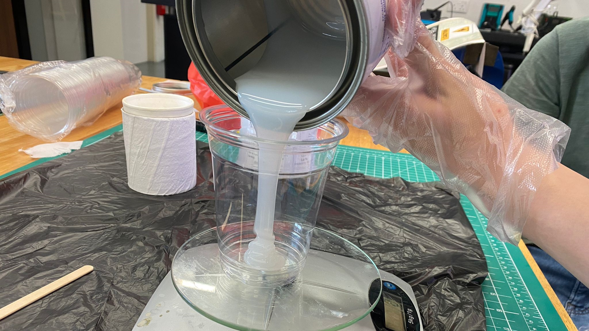

Molding and Casting
In the segment, i will be learning how to produce 3D shapes through the process of creating a mold and casting it to produce the final product.
Step 1: Design
Similar to the other assignments, the first step was to design the shape that i wanted on Fusion360. I made a cone shape and cut out a sphere at the top of the cone, making sure that the height of the cone is 15mm tall.
Next, i created the walls of height 20mm and 5mm thickness. This is to create sort of a container to store the silicon for creating the cast later on. It is also very important that the height of the cone is smaller that the height of the walls. I then joined them together finalising the product.

The next step was to generate the G-code using Fusion360, I then switched the modes from Design to Manufacturing.I decided to split the process of milling my mould out into two parts (Roughing and Finishing).Using the pocketing function, it will allow the mill to clear large quantities of material in the mold.
The first step was to create a new tool for the cutting process, hence i defined it's geomatry after a 3mm end mill.
I then defined its toolpath perimeters, editing its feed, speed, spindle speed and cutting feedrate. I also created a new set of parameters for Passes, edited Stepover and Stepdown. I also added in stock to leave as this was only the roughing cut of the mold.
I then simmulated the roughing cut to make sure it was cutting everything correctly, before moving on the creating the toolpath for the finishing cut.
For the finishing cut, there were some factors that were edited to make sure the cutting and finishing was smooth. The excess stock to leave was also unchecked, the feedrate and cutting speed were also reduced.
I simmulated the entire cutting process from start to finiss and after checking that everything was correct, i went on the generate the G-code using the post process function. I selected the correct CNC machine that i was using, and coppied the file onto a thumbdrive.
The next step was to prepare CNC machine for cutting out my mold. I first stuck the foam onto the bed of the machine using double-sided tape to secure it onto the machine. I then loaded the NC file contatining the Gcode onto the laptop, set up the X, Y and Z axis. And thereafter, started the milling process.
Final Mold
Next, i put on gloves for safety, before mixing a 1:1 ratio of ___ for the silicon mixture. The mixture was then stired for a few minutes, to ensure that the silicon was well mixed together.

Next, the silicon mixture was poured onto one corner of the mold so as to prevent any air bubbles being formed in the mold. To further ensure that there were no air bubbles formed in the mold, I lightly tapped the mold onto the table a few times.
The mold was then left to set over the weekend, to ensure that it has fully hardened.
Next, i removed the mold from the foam, and cleaned it up abit to prepare it for the next step.

Continuing with the process, i mixed up a mixture of resin, and repeated the steps of pouring the mixture into the cast.
The resin was the poured into the cast, using the same method of pouring it into on of the four corners. The resin was then left to set for about 2 hours, while it hardened completely. To give the final product.